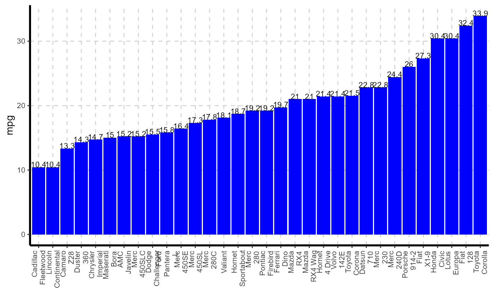

ExpCatViz.RdThis function automatically scans through each variable and creates bar plot for categorical variable.
ExpCatViz(data,target=NULL,fname=NULL,clim=10,col=NULL,margin=1,Page=NULL, Flip=F,sample=NULL,rdata=FALSE,value=NULL,gtitle=NULL,theme="Default")
| data | dataframe or matrix |
|---|---|
| target | target variable. This is not a mandatory field. |
| fname | output file name. Output will be generated in PDF format |
| clim | maximum categories to be considered to include in bar graphs. |
| col | define the colors to fill the bars, default it will take sample colours. |
| margin | index, 1 for row based proportions and 2 for column based proportions |
| Page | output pattern. if Page=c(3,2), It will generate 6 plots with 3 rows and 2 columns |
| Flip | default vertical bars. It will be used to flip the axis vertical to horizontal |
| sample | random selection of categorical variable |
| rdata | to plot bar graph for frequency/aggregated table |
| value | value coloumn name. This is mandatory if 'rdata' is TRUE |
| gtitle | graph title |
| theme | extra themes, geoms, and scales for 'ggplot2' (use theme from ggthemes package) |
This function returns collated graphs in grid format in PDF or JPEG format. All the files will be stored in the working directory
Bar graph - for raw data(this function will dynamically pick all the categorical variable and plot the bar chart)
Bar graph - aggregated data
Stacked Bar graph by target variable
## Bar graph for specified variable mtdata <- mtcars mtdata$carname <- rownames(mtcars) ExpCatViz(data=mtdata,target="carname",col="blue",rdata=TRUE,value="mpg")#> [[1]]#>